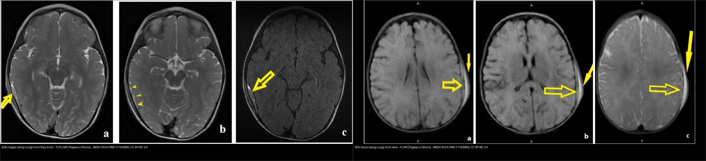
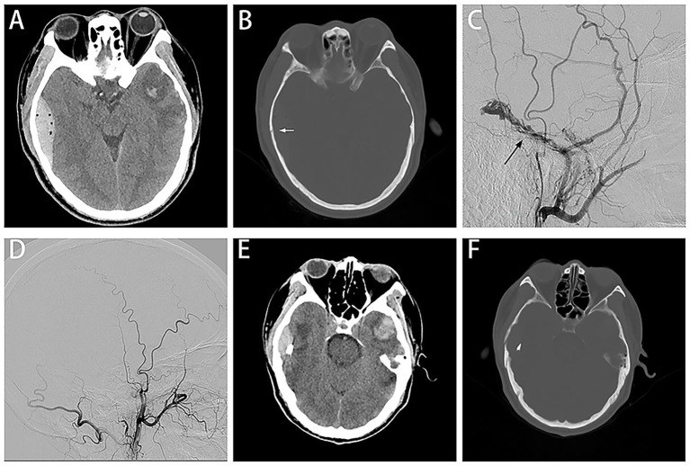
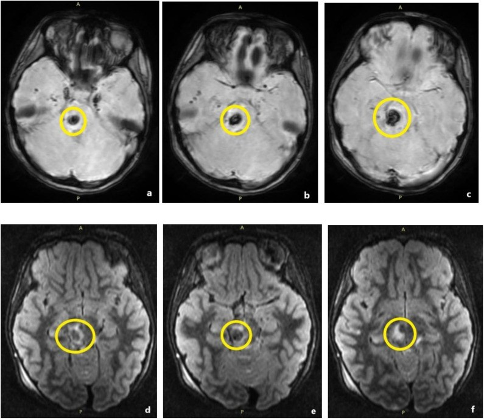
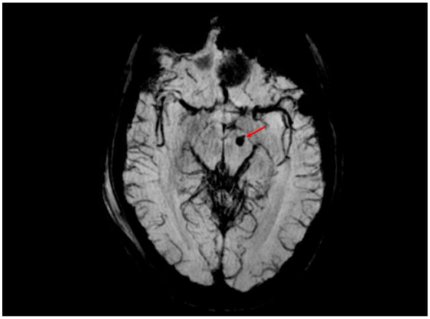
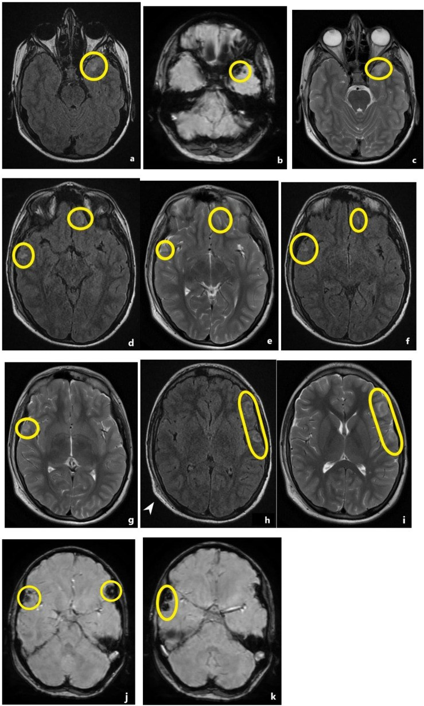
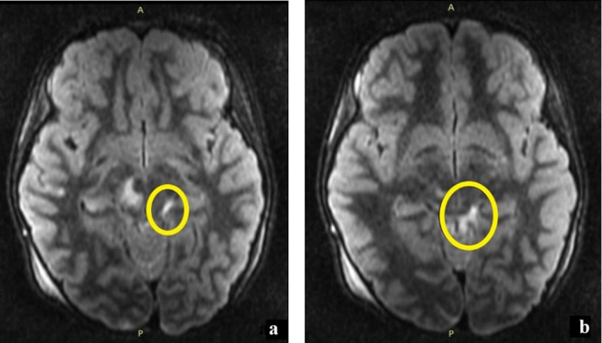
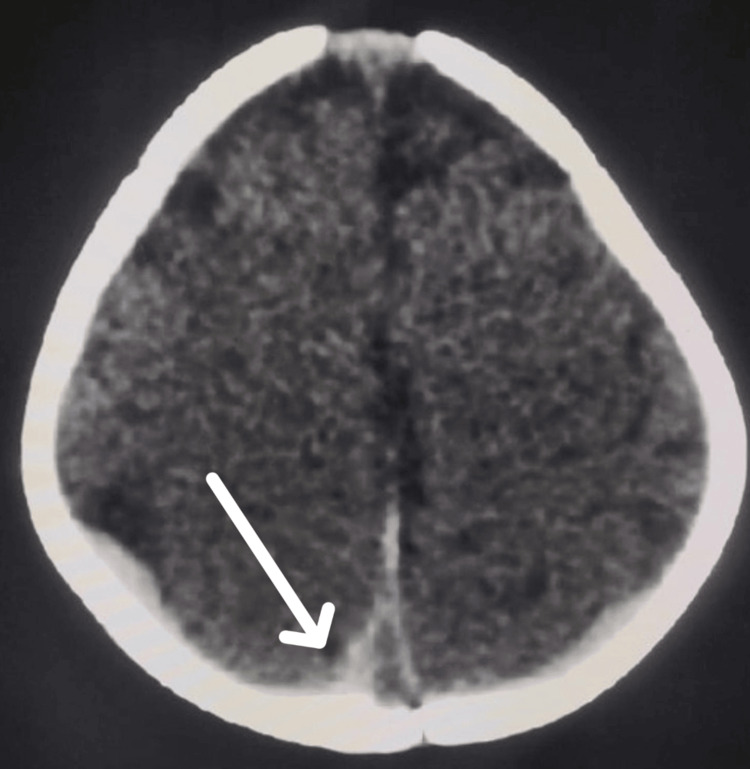
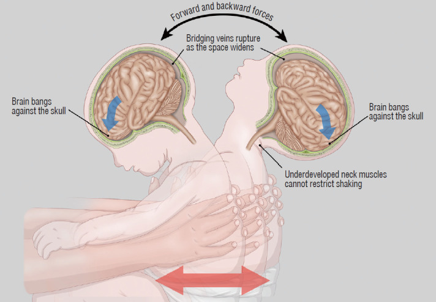

224 — Chấn thương sọ não ở trẻ (TBI nhi): phân độ Marshall/Rotterdam, khoang dưới nhện & DAI / Pediatric traumatic brain injury
Tags: pattern:chan-thuong-so-nao pattern:xuat-huyet-ngoai-truc pattern:dai vung:nao-nhi score:Marshall score:Rotterdam score:PECARN protocol:CT-so-nao protocol:MRI-TBI
Mức chắc chắn (certainty): tổng hợp y văn (literature synthesis) — nhóm tự biên từ y văn mở (Popescu 2024, Cheon 2022 CC BY-NC; Hahnemann 2025, Santurro 2025, Raees 2022 CC BY), ghép 4 cửa Argon + các thang điểm có số; các ca trong quiz là ca nguyên văn (verbatim case) chép đúng tuổi – cơ chế – chú thích gốc.
1. Tổng quan bệnh học – cơ chế hình ảnh
- Chấn thương sọ não (traumatic brain injury — TBI) là tổn thương não do lực cơ học, nguyên nhân tử vong – tàn tật số 1 ở trẻ (Popescu 2024). Cơ chế: va đập trực tiếp (coup), đối diện (contrecoup) và tăng–giảm tốc xoay (rotational acceleration–deceleration) sinh lực cắt (shear).
- TẠI SAO trẻ em KHÁC người lớn (nền tảng đọc hình): (1) đầu to – nặng tương đối + cơ cổ yếu → lực xoay lớn, dễ tổn thương sợi trục lan tỏa (diffuse axonal injury — DAI); (2) sọ mỏng, dẻo, khớp sọ chưa liền → vỡ/giãn khớp (diastatic) mà đôi khi không lún, và máu tụ ngoài màng cứng (EDH) có thể xuất hiện dù không thấy đường vỡ; (3) não nhiều nước, myelin chưa hoàn chỉnh → xu hướng phù não lan tỏa (diffuse cerebral swelling) hơn là máu tụ khu trú; (4) hộp sọ nhỏ → khối choán chỗ nhỏ cũng đủ tăng áp lực nội sọ (ICP); (5) tự điều hòa áp lực (autoregulation) non nớt nên huyết áp tụt rất dễ làm tổn thương lan rộng.
- TẠI SAO đọc được bản chất mô trên CT — đậm độ Hounsfield (HU): máu tụ cấp đậm độ cao 40–70 HU (có cục co rút tới 50–90 HU) do hemoglobin đặc; dịch não tủy (CSF) 0–15 HU, nhu mô não 30–40 HU, mỡ ≈ −100 HU. Phù = tăng nước nội–ngoại bào → giảm đậm độ (giảm 2–3 HU/giờ ở nhồi máu, nhanh hơn ở contusion). Xương sọ cản quang mạnh → cửa sổ xương bắt buộc để tìm đường vỡ.
- TẠI SAO MRI bắt được DAI mà CT bỏ sót: DAI là vi xuất huyết (microhemorrhage) tại giao diện chất xám–trắng, thể chai, cuống não. Sản phẩm máu (deoxyhemoglobin, hemosiderin) gây mất tín hiệu cục bộ + "blooming" trên chuỗi nhạy từ (GRE/T2*/SWI); SWI nhạy nhất — phát hiện gấp nhiều lần T2* thường quy. Phù quanh trục trục thì T2/FLAIR tăng tín hiệu (nước tự do); vùng thiếu máu/DAI hạn chế khuếch tán (DWI sáng, ADC tối).
- Ngưỡng định lượng nằm lòng: lệch đường giữa (midline shift — MLS) > 5 mm và khối choán chỗ > 25 cm³ là mốc của thang Marshall; ICP bình thường < 10–15 mmHg, điều trị khi ICP > 20 mmHg; áp lực tưới máu não (CPP) tối thiểu 40–50 mmHg (nhũ nhi/trẻ nhỏ), 50–60 mmHg (trẻ lớn) (PBTF 2019, Kochanek PM et al., PMID 30829890); EDH cần mổ khi thể tích > 30 cm³, dày > 15 mm hoặc MLS > 5 mm (Bullock MR et al., PMID 16710967 — dựa trên người lớn, dùng tham chiếu ở trẻ).
2. Mẫu hình + chẩn đoán phân biệt theo khoang và cơ chế (Gamut)
- Ngoài trục (extra-axial): máu tụ ngoài màng cứng (EDH) — thấu kính (biconvex/lenticular), bị giới hạn bởi đường khớp sọ; máu tụ dưới màng cứng (SDH) — hình liềm (crescent), VƯỢT khớp sọ, hay dọc liềm não/lều tiểu não; xuất huyết dưới nhện do chấn thương (traumatic SAH) — tăng đậm độ trong bể nền/rãnh não (+ xuất huyết trong não thất — IVH).
- Trong trục (intra-axial): đụng dập não (contusion) — đám tăng đậm độ vỏ–dưới vỏ, thường coup/contrecoup (cực trán/thái dương); DAI — vi xuất huyết ở giao diện chất xám–trắng, thể chai (splenium), cuống não/cầu não; phù não lan tỏa — xóa rãnh/bể, xẹp não thất hai bên, mất phân biệt xám–trắng.
- Tổn thương xương kèm theo: vỡ tuyến tính, vỡ giãn khớp (diastatic), vỡ lún (depressed), vỡ nền sọ (basilar) (chảy máu quanh mắt/tai, dấu bầm sau tai Battle, mắt gấu trúc raccoon), vỡ sọ tiến triển (growing skull fracture — nang màng não-tủy) ở trẻ < 3 tuổi khi rách màng cứng.
- Theo tuổi – cơ chế (chìa khóa định hướng): nhũ nhi < 2 tuổi, chưa tự đi mà có SDH + vỡ sọ → nghĩ chấn thương do bị hành hạ (abusive head trauma — AHT/NAT); trẻ đi được, ngã → contusion/EDH; tai nạn giao thông → DAI + tổn thương lan rộng.
3. Bảng so sánh phân biệt (ma trận đối chiếu)
| Thực thể (entity) | Hình ảnh điển hình (CT/MRI) | Chốt vào (rule-in) | Chốt loại (rule-out) | Gợi ý xác nhận |
|---|---|---|---|---|
| EDH (ngoài màng cứng) | Khối thấu kính (lens/biconvex), tăng đậm độ cấp, ranh giới dừng ở đường khớp sọ, ± vỡ xương trên đó, ± "swirl sign" (máu hoạt tính) | Hình thấu kính + KHÔNG vượt khớp sọ | Hình liềm/vượt khớp + dọc liềm → SDH | CT 1 mm cửa sổ xương; đo dày/thể tích/MLS để quyết mổ |
| SDH (dưới màng cứng) | Khối hình liềm (crescent), tăng đậm độ cấp, VƯỢT khớp sọ, men theo liềm/lều | Hình liềm + vượt khớp sọ | Hình thấu kính dừng ở khớp → EDH | CT; MRI T1/T2 để phân tuổi máu; luôn hỏi cơ chế ở nhũ nhi |
| tSAH (dưới nhện chấn thương) | Tăng đậm độ trong rãnh/bể nền (thể chai, quanh cuống não), FLAIR tăng tín hiệu | Máu trong bể nền/rãnh não | Tăng đậm độ dọc chính giữa liềm/dây chằng đơn thuần = giả (falx bình thường) | NECT; CTA nếu do vỡ phình (khác bối cảnh); theo dõi co mạch |
| Contusion | Đám tăng đậm độ chèn vỏ não, vị trí coup/contrecoup (cực trán/thái dương) | Tổn thương dính vỏ + cơ chế va đập | Khối lớn khu trú có vỏ bao rõ + không cơ chế → u/máu tụ | CT; MRI theo dõi tiến triển/nhũn não |
| DAI | Vi xuất huyết giao diện xám–trắng, thể chai, cuống não; T2*/SWI mất tín hiệu "blooming" | Vị trí đặc trưng + SWI/GRE sáng | CT bình thường KHÔNG loại trừ DAI (MRI mới thấy) | MRI SWI + DWI; chấm độ DAI (Adams I–III) để tiên lượng |
| Phù não lan tỏa (diffuse swelling) | Xóa rãnh/bể, xẹp não thất hai bên, mất phân biệt xám–trắng | Xẹp não thất + xóa bể hai bên | Còn bể + không lệch → Marshall II nhẹ | Theo dõi ICP; ICP > 20 mmHg là ngưỡng điều trị |
| AHT/NAT (nhũ nhi) | SDH nhiều tầng/mảnh (đậm độ khác nhau) ± vỡ sọ, thiếu máu–phù lan tỏa; KHÔNG tương xứng với cơ chế kể | SDH + xuất huyết võng mạc + thương tích hệ khác ở trẻ < 2 tuổi chưa tự đi | Chẩn đoán khác: rối loạn chuyển hóa (glutaric aciduria type 1, Menkes), SDH quanh sinh, bệnh máu/rối loạn đông | Khám đáy mắt + MRI toàn thân xương; hội chẩn bảo vệ trẻ em |

*Trái: EDH — khối ngoài trục hình thấu kính (lenticular), mặt trong † áp vào não, dấu màng cứng (đường tối mảnh) hiện ở mũi tên nhỏ. Phải: SDH — khối hình liềm (crescent) men theo vòm sọ, lõm theo bề mặt não. Ảnh ghép letterbox giữ aspect gốc (không crop/kéo giãn) từ 2 hình cùng nguồn: Popescu CM et al., J Multidiscip Healthc 2024 (PMC11193985), CC BY-NC 3.0 (tác phẩm phái sinh giữ nguyên giấy phép).*Đọc nhanh khoang dưới nhện & bể nền (cho Marshall)
- Bể nền (basal cisterns) = "cửa sổ sống còn" của thang Marshall/Rotterdam: bình thường → còn não thất/sulci chứa dịch; bị chèn ép (compressed) = bể còn mảnh nhưng hẹp; mất (absent) = xóa hẳn → gợi ý tăng ICP nặng, tiên lượng xấu.
- Phân biệt tSAH vs giả tSAH: máu dưới nhện nằm trong rãnh/bể, bất đối xứng; tăng đậm độ dọc chính giữa liềm não rất đối xứng ở người trẻ thường chỉ là vôi hóa/mạch liềm bình thường — cạm bẫy gọi nhầm "SAH".
4. Protocol chụp + thang điểm Marshall/Rotterdam/PECARN
- CT không tiêm (NECT) lát mỏng ≤ 1 mm + cửa sổ xương là cửa vào mọi TBI cấp tính (nhanh, loại trừ máu tụ/xuất huyết, tìm vỡ sọ). CTA khi nghĩ tổn thương mạch máu (bóc tách, giả phình, vỡ sọ nền/xuyên thấu) — không thường quy ở trẻ.
- MRI (SWI + DWI/ADC + T2/FLAIR) khi: CT bình thường nhưng lâm sàng nặng, nghi DAI, tiên lượng hôn mê, hoặc theo dõi di chứng. SWI/GRE là chuỗi quyết định cho DAI.
- Đo và ghi vào báo cáo: MLS (mm), thể tích khối choán chỗ (cm³), trạng thái bể nền (bình thường/chèn ép/mất), có IVH/tSAH hay không, có EDH hay không — đây là các biến của thang điểm bên dưới.
- Thang Marshall (Marshall LF et al., J Neurosurg 1991;75(Suppl):S14–20) — phân loại hình thái:
- I – Không thấy tổn thương
- II – Tổn thương lan tỏa nhẹ: bể nền còn, MLS 0–5 mm, không khối > 25 cm³
- III – Phù lan tỏa (swelling): bể bị chèn ép/mất, MLS 0–5 mm, không khối > 25 cm³
- IV – Lệch: MLS > 5 mm, không khối > 25 cm³
- V – Khối choán chỗ ĐÃ mổ lấy (evacuated mass)
- VI – Khối choán chỗ > 25 cm³ KHÔNG mổ (non-evacuated mass)
- Thang Rotterdam (Maas AI et al., Neurosurgery 2005, PMID 16331165) — cộng 4 biến, tổng 1–6 điểm (điểm càng cao càng tử vong nhiều):
- Bể nền: bình thường 0 · chèn ép 1 · mất 2
- MLS: ≤ 5 mm 0 · > 5 mm 1
- EDH: có → 0 · không → 1 (EDH tăng thêm 0 điểm vì tiên lượng tốt hơn)
- IVH hoặc tSAH: không 0 · có 1
- Thang quyết định chụp CT ở trẻ — PECARN (Kuppermann N et al., Lancet 2009, PMID 19758692): không khuyến cáo CT khi không có yếu tố dự báo nào (nguy cơ chấn thương não quan trọng trên lâm sàng — ciTBI < 0,02% ở < 2 tuổi và < 0,05% ở ≥ 2 tuổi). Yếu tố nguy cơ cao (< 2 tuổi: GCS < 15, tri giác bất thường, sờ thấy vỡ sọ; ≥ 2 tuổi: GCS < 15, tri giác bất thường, dấu vỡ nền sọ) → CT ngay.
flowchart TD
A[Trẻ CHẤN THƯƠNG ĐẦU, GCS 14-15] --> B{Đã có yếu tố nguy cơ cao?}
B -->|GCS<15 / tri giác bất thường / sờ thấy vỡ sọ hoặc dấu vỡ nền sọ| C[CT sọ NGAY + cửa sổ xương]
B -->|Không| D{Tuổi < 2 tuổi?}
D -->|Có| E[PECARN <2t: ổ máu da đầu đỉnh-chẩm-thái dương / LOC>=5s / cơ chế nặng]
D -->|Không| F[PECARN >=2t: vỡ nền sọ / nhức đầu nặng / nôn / LOC / cơ chế nặng]
E --> G{Có >= 1 yếu tố nguy cơ TRUNG BÌNH?}
F --> G
G -->|Có| H[CT hoặc theo dõi 4-6 giờ tại khoa]
G -->|Không| I[KHÔNG chụp CT: ciTBI < 0.02-0.05%]
C --> J{Có máu tụ / lệch / bể mất?}
J -->|Có| K[Chấm Marshall + Rotterdam; hội chẩn ngoại]
J -->|CT bình thường mà lâm sàng nặng| L[MRI SWI+DWI: tìm DAI]
5. Biến thể bình thường và cạm bẫy
- PECARN giúp GIẢM chụp nhưng có vùng mù: không áp dụng cho trẻ < 3 tháng tuổi, trẻ có bệnh máu/rối loạn đông, shunt/thủ thuật thần kinh trước đó, hoặc chấn thương lực rất mạnh — nhóm này cứ CT/hội chẩn.
- "CT bình thường = não lành" là cạm bẫy chết người: DAI có thể CT âm tính; nếu lâm sàng nặng mà CT bình thường → MRI SWI/DWI.
- Bỏ sót tổn thương ĐỐI DIỆN (satisfaction of search): sau khi thấy máu tụ một bên, luôn soát bán cầu còn lại và tìm thêm contusion/EDH/SDH thứ hai.
- EDH ở trẻ có thể do tĩnh mạch, có thể không có vỡ sọ, và "khoảng tỉnh" (lucid interval) không đáng tin — đừng loại trừ EDH chỉ vì trẻ tỉnh táo hoặc không thấy đường vỡ.
- Giả tSAH: tăng đậm độ dọc liềm não chính giữa rất đối xứng (người trẻ) là hình thái bình thường, không phải máu dưới nhện.
- AHT và các thể giả AHT (mimic): glutaric aciduria type 1 (SDH + tổn thương hạch nền + loạn dưỡng chất trắng) và Menkes (mạch xoắn, tổn thương chất trắng, SDH) có thể bị đọc nhầm thành NAT — do đó luôn kèm đánh giá chuyển hóa/toàn thân, không kết luận NAT chỉ bằng một tổn thương (Cheon JE, Kim JH, J Korean Neurosurg Soc 2022, PMC9082130).
- SDH quanh sinh (birth-related) ở trẻ sơ sinh có thể tự tiêu — phân biệt với SDH do chấn thương mới bằng bối cảnh + chuỗi hình ảnh theo thời gian, không bằng một lần chụp.
- Vỡ sọ tiến triển (growing fracture) ở trẻ < 3 tuổi xuất hiện nhiều tuần–tháng sau chấn thương do rách màng cứng + dò dịch → cần theo dõi phim chụp lại, không bỏ quên sau một phim bình thường.
- Máu tụ dưới màng cứng phân tuổi bằng MRI: đậm độ CT rất nhạy ở giai đoạn rất sớm nhưng mau đồng đậm; trong AHT đã kiểm chứng, SDH đậm độ cao trên CT gặp tới ngày thứ 9, màng dưới màng cứng hình thành muộn từ ngày 283, dấu "nòng nọc" (tadpole sign) trên MRI từ 3 giờ tới 46 ngày (Hahnemann M et al., Eur Radiol 2025, PMC12021946).
6. Tự lượng giá — Blind Quiz (ảnh trơn ngoài, đáp án trong)
Ca 1 — Trẻ bị ngã, sau chấn thương có một bên đồng tử giãn, liệt nửa người. Nhìn CT (panen A là ảnh CT):

- Gợi ý lâm sàng (clinical context): chấn thương đầu kín, thần kinh xấu dần, có vỡ xương thái dương.
- Câu hỏi: mô tả khối ngoài trục? Hình dạng gì, có vượt đường khớp sọ không? 3 chẩn đoán phân biệt? Xử trí?
Bấm để hiện đáp án (findings + chẩn đoán)
- Dấu hiệu (findings): khối tăng đậm độ cấp vùng thái dương phải, hình thấu kính (biconvex), dừng ở đường khớp sọ (không vượt), kèm đường vỡ xương thái dương (panel B) và lệch đường giữa + chèn ép; DSA cho thấy mạch màng não giữa (MMA) liên quan (panel C–E).
- Chẩn đoán (diagnosis): máu tụ ngoài màng cứng (EDH) cấp — thường do rách MMA động mạch ± vỡ xương. Xử trí: hội chẩn mổ giải ép cấp cứu; thể nhỏ có thể theo dõi/nút MMA (nghiên cứu: 14 ca EDH nhỏ + vỡ sọ nút MMA sớm đều không tiến triển, khỏi không di chứng) — nhưng khi có dấu hiệu chèn ép thì mổ ngay.
- Nguồn ảnh: Wang W et al., Front Neurol 2026 (PMC12956541), CC BY 4.0.
Ca 2 — Nhũ nhi 5 tháng ngã, nhìn 2 ảnh: ảnh trái có khối hình gì, ảnh phải hình gì?
- Gợi ý lâm sàng (clinical context): hai cơ chế khác nhau trên cùng một chuỗi xung.
- Câu hỏi: đâu là EDH, đâu là SDH? Dấu hiệu hình học chốt? Ở nhũ nhi, kiểu nào phải nghĩ đến AHT?
Bấm để hiện đáp án (findings + chẩn đoán)
- Dấu hiệu (findings): trái = EDH dạng thấu kính (lenticular), mặt trong lõm theo não (dấu màng cứng — đường tối mảnh); phải = SDH dạng liềm (crescent) men vòm sọ.
- Chẩn đoán (diagnosis): EDH vs SDH — chốt hình học là thấu kính + dừng ở khớp sọ vs liềm + vượt khớp. Ở nhũ nhi chưa tự đi, SDH (đặc biệt nhiều tầng) phải loại trừ AHT/NAT trước khi cho là ngã thường.
- Nguồn ảnh: Popescu CM et al., J Multidiscip Healthc 2024 (PMC11193985), CC BY-NC 3.0 (ảnh ghép phái sinh).
Ca 3 — Trẻ TNGT, CT bình thường nhưng hôn mê. Nhìn MRI (a–c) và FLAIR (d–f):

- Câu hỏi: vị trí tổn thương? Chuỗi nào thấy rõ nhất? Chẩn đoán + độ DAI (Adams)? Vì sao CT âm tính?
Bấm để hiện đáp án (findings + chẩn đoán)
- Dấu hiệu (findings): vùng mất tín hiệu (tối) ở cầu não/cuống não trên SWI (a–c), có phù quanh (FLAIR tăng tín hiệu, d–f).
- Chẩn đoán (diagnosis): DAI độ III (Adams — thân não/cuống não): vi xuất huyết không thấy trên CT vì quá nhỏ; SWI nhạy nhất. DAI độ III = tiên lượng xấu nhất trong nhóm DAI.
- Nguồn ảnh: Popescu CM et al., J Multidiscip Healthc 2024 (PMC11193985), CC BY-NC 3.0.
Ca 4 — Trẻ TNGT, nhìn T2*: mũi tên đỏ chỉ gì và nghĩa là gì?

- Câu hỏi: dấu hiệu trên chuỗi xung? Nếu chỉ có CT sẽ ra sao? Ý nghĩa tiên lượng?
Bấm để hiện đáp án (findings + chẩn đoán)
- Dấu hiệu (findings): nốt mất tín hiệu nhỏ ở cuống não trái (mũi tên đỏ) trên SWI = vi xuất huyết sợi trục (thể tích chỉ ~0,03 cm³) — tương ứng DAI độ III.
- Chẩn đoán (diagnosis): DAI xuất huyết — CT thường bỏ sót; SWI phát hiện tổn thương mà CT/T2* thường quy không thấy. Tổn thương thân não = tiên lượng vận động/tri giác xấu.
- Nguồn ảnh: Santurro A et al., Int J Mol Sci 2025 (PMC12386751), CC BY 4.0.
Ca 5 — Trẻ va đập, nhìn chuỗi FLAIR (a, d, f, h) và SWI (b, j, k):

- Câu hỏi: tổn thương ở đâu (trong hay ngoài trục)? Vì sao SWI thấy rõ hơn FLAIR? Đây là contusion hay DAI?
Bấm để hiện đáp án (findings + chẩn đoán)
- Dấu hiệu (findings): nhiều đám tín hiệu bất thường ở vỏ–dưới vỏ (khoanh vàng) trên FLAIR, tương ứng vùng mất tín hiệu trên SWI = thành phần xuất huyết.
- Chẩn đoán (diagnosis): đụng dập vỏ não (cortical contusion) — tổn thương trong trục dính vỏ; khác DAI (giao diện xám–trắng/thể chai/thân não). SWI thấy thành phần vi xuất huyết mà FLAIR chỉ thấy phù.
- Nguồn ảnh: Popescu CM et al., J Multidiscip Healthc 2024 (PMC11193985), CC BY-NC 3.0.
Ca 6 — Trẻ TNGT, nhìn FLAIR (a) và (b): dấu hiệu bất đối xứng nằm ở đâu?

- Câu hỏi: vùng tăng tín hiệu ở đâu? Chẩn đoán? Phân biệt với "giả tSAH"?
Bấm để hiện đáp án (findings + chẩn đoán)
- Dấu hiệu (findings): tăng tín hiệu FLAIR trong bể quanh cuống não (bể quanh cuống/ambient cistern) (khoanh vàng), bất đối xứng — tương ứng máu trong khoang dưới nhện.
- Chẩn đoán (diagnosis): xuất huyết dưới nhện do chấn thương (tSAH) — máu trong bể nền/rãnh. Phân biệt giả tSAH: tăng đậm độ dọc chính giữa liềm não rất đối xứng ở người trẻ là hình thái bình thường.
- Nguồn ảnh: Popescu CM et al., J Multidiscip Healthc 2024 (PMC11193985), CC BY-NC 3.0.
Ca 7 — Nhũ nhi 9 tháng nôn, co giật, rối loạn tri giác; đáy mắt có vô số đốm Roth. Nhìn CT:

- Gợi ý lâm sàng (clinical context): trẻ nhũ nhi, không rõ cơ chế tương xứng, đáy mắt bất thường.
- Câu hỏi: mô tả dải tăng đậm độ? 3 chẩn đoán phân biệt? Bước tiếp theo?
Bấm để hiện đáp án (findings + chẩn đoán)
- Dấu hiệu (findings): dải máu dưới màng cứng mảnh (mũi tên trắng) dọc liềm/bán cầu (liềm não + vùng chẩm-đỉnh hai bên), kèm xuất huyết võng mạc nhiều tầng + đốm Roth trên soi đáy mắt.
- Chẩn đoán (diagnosis): chấn thương do bị hành hạ (AHT/NAT) — tam chứng: bệnh não + SDH + xuất huyết võng mạc (không có dấu nào tuyệt đối đặc hiệu một mình). Bước tiếp theo: khám đáy mắt đầy đủ + MRI não/tủy + X-quang xương theo tuổi (skeletal survey) + đánh giá chuyển hóa/đông máu + hội chẩn bảo vệ trẻ em. Phải loại trừ mimic: glutaric aciduria type 1, Menkes (xem Ca 8).
- Nguồn ảnh: S N et al., Cureus 2026 (PMC13172391), CC BY 4.0.
Ca 8 — Sơ đồ cơ chế sinh chấn thương đầu do rung lắc: mũi tên xoay và "tĩnh mạch cầu" vỡ giải thích gì?

- Câu hỏi: cơ chế nào tạo SDH? Vì sao trẻ nhũ nhi nhạy cảm? Hai chẩn đoán chuyển hóa có thể giả AHT?
Bấm để hiện đáp án (findings + chẩn đoán)
- Dấu hiệu (findings): sơ đồ cho thấy lực xoay tới–lui làm giãn khoang dưới nhện → vỡ tĩnh mạch cầu (bridging veins) → SDH; não đập vào sọ → đụng dập; cơ cổ non yếu không hạn chế được lực rung lắc.
- Chẩn đoán (diagnosis): cơ chế sinh AHT — giúp hiểu vì sao SDH + xuất huyết võng mạc + đụng dập/DAI cùng xuất hiện ở nhũ nhi. Phải loại trừ glutaric aciduria type 1 và Menkes (đều có thể có SDH + tổn thương nhu mô giả chấn thương).
- Nguồn ảnh: Cheon JE, Kim JH, J Korean Neurosurg Soc 2022 (PMC9082130), CC BY-NC 4.0.
Bài liên quan chéo
- 200 – Tổng quan Thần kinh
- 201 – Protocol CT/MRI sọ não (cửa sổ đột quỵ/chấn thương, DWI)
- 210 – Giải phẫu cắt lớp sọ não
- 212 – Xuất huyết nội sọ (EDH, SDH, SAH) & diễn tiến hemoglobin (bản người lớn)
- 218 – Thoát vị não & úng thủy (thoát vị khi ICP tăng)
- 650 – Thần kinh nhi: xuất huyết mầm & u hố sau
- 655 – HIE sơ sinh & dị tật bẩm sinh (DDx não nhi)
- 223 – Chấn thương tủy sống: ASIA & SCIWORA (chấn thương thần kinh trục)
- 231 – BCVI & vỡ sọ tiến triển ở trẻ (biến chứng mạch máu – xương sọ)
- 232 – Chấn thương đầu nhẹ & concussion ở trẻ (PECARN, quan sát, quay lại học/thể thao)
- 1783 – Huyết khối xoang tĩnh mạch não sau chấn thương đầu ở trẻ (vỡ xương bắt ngang xoang, NCCT 61 HU, CTV 20–25 giây)
Ảnh
images/224_chan-thuong-so-nao-nhi_MRI_PMC11193985-Fig1-contusion-CCBYNC.jpg— đụng dập vỏ não (CC BY-NC 3.0).images/224_chan-thuong-so-nao-nhi_MRI_PMC11193985-Fig4-DAI-gradeIII-CCBYNC.jpg— DAI độ III thân não (CC BY-NC 3.0).images/224_chan-thuong-so-nao-nhi_MRI_PMC11193985-Fig5-EDH-lenticular-CCBYNC.jpg— EDH thấu kính (CC BY-NC 3.0).images/224_chan-thuong-so-nao-nhi_MRI_PMC11193985-Fig6-SDH-crescent-CCBYNC.jpg— SDH hình liềm (CC BY-NC 3.0).images/224_chan-thuong-so-nao-nhi_MRI_PMC11193985-Fig7-tSAH-CCBYNC.jpg— tSAH bể quanh cuống (CC BY-NC 3.0).images/224_chan-thuong-so-nao-nhi_CT_PMC9411658-Fig2-SDH-crescent-CCBY.jpg— SDH hình liềm trên CT (CC BY 4.0).images/224_chan-thuong-so-nao-nhi_CT_PMC13172391-Fig4-SDH-NAT-CCBY.jpg— SDH mảnh trong AHT (CC BY 4.0).images/224_chan-thuong-so-nao-nhi_CT_PMC12956541-Fig1-EDH-CCBY.jpg— EDH cấp + vỡ xương + MMA (CC BY 4.0).images/224_chan-thuong-so-nao-nhi_MRI_PMC12386751-Fig5-SWI-DAI-CCBY.jpg— DAI trên SWI (CC BY 4.0).images/224_chan-thuong-so-nao-nhi_SD_PMC9082130-Fig1-AHT-co-che-CCBYNC.jpg— sơ đồ cơ chế AHT (CC BY-NC 4.0).images/composite_224_EDH-vs-SDH.jpg— ảnh ghép EDH vs SDH (phái sinh CC BY-NC 3.0).- Nguồn + giấy phép đầy đủ:
images/CREDITS.md; link gốc:sources.md.
Không dùng để chẩn đoán độc lập khi chưa có người hướng dẫn.